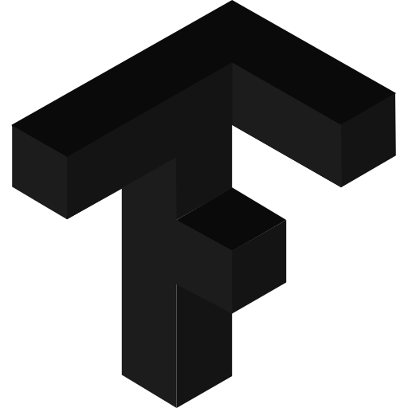

Lukasz Biernat
Experienced Technical Animation Director with a proven track record in Commercials, Films, and Games. Skilled in Maya, Python, and C++. Responsible for pipeline optimization, improvement of in-house tools, and workflow automation. I am resourceful, highly motivated, and in constant search of new challenges to grow my skills. I've spent my entire career jumping into projects in the 11th hour to fight fires and solve impossible problems. Now super excited about web development!
-

Web Developer
Darkest Medium · Full-time
Jan 2024 - Present
Outer Space, Remote
Learning about web development and cyber security.
-

Technical Animation Director
Bambaa · Full-time
Nov 2021 - Oct 2023 · 2 years
Warsaw, Poland, Remote
I began my journey in the realm of freelancing alongside my friends, which eventually evolved into a full- time engagement on the "Sinners" game project. Within this role, I have taken charge of the complete animation pipeline. My responsibilities encompass the development of a contemporary animation focused framework for Maya. Crafted personalized animation rig designs. Ingeniously adapted HumanIk to align with our animation rig requirements. Maintained customer records and updated account information. Devised a two-bone IK solver inherited from the MPxNode class.

Technical Director
Blur Studio · Full-time
Aug 2020 - Jul 2021 · 1 year
San Jose, Costa Rica, Remote
Experienced Technical Director with a strong track record in pipeline maintenance, Motion Capture retargeting optimization, and batch processing of animation and layout scenes. Contributed to the success of 'Love, Death & Robots 2' by leading efforts in enhancing workflows and accelerating legacy toolsets. Proven ability to deliver efficient solutions that improve productivity and streamline operations.

Technical Layout Director
Double Negative · Full-time
Jan 2020 - Aug 2020 · 8 months
Montreal, Canada, On-site
Played a pivotal role as a Technical Layout Director at DNEG, contributing to high-profile projects including 'Foundation' (Apple TV), 'Infinite' (Paramount Pictures), and 'Fast and Furious 9' (Universal Pictures). Led shot assembly, previs, and layout efforts, showcasing a strong ability to enhance visual storytelling and drive project success.

Technical Layout Director
Framestore · Full-time
Oct 2019 - Dec 2019 · 3 months
Montreal, Canada, On-site
Worked as a Technical Layout Director on the Tom and Jerry feature film for Warner Bros. Pictures and Jingle Jangle - Netflix.

Technical Layout Director
Moving Picture Company · Full-time
Apr 2019 - Oct 2019 · 7 months
Montreal, Canada, On-site
Experienced Technical Layout Director with a proven record of orchestrating shot assembly and optimizing workflows for impactful visual storytelling. Instrumental in the success of 'Call of The Wild' (20th Century FOX), spearheading shot assembly and streamlining day-to-day operations through scripting automation. Excelled in effective inter-departmental communication and thrived in high- pressure situations, consistently ensuring project alignment and quality. Adroitly managed challenges arising from decision-making delays, preventing budget overruns and maintaining project excellence.

Technical Previs Director
DIGIC Pictures · Full-time
Dec 2018 - Mar 2019 · 4 months
Budapest, Hungary, On-site
Experienced Previs Artist and Technical Director, contributing to successful projects including the 'Warframe' game cinematic at Digital Extremes. Pioneered and adapted in-house non-linear mocap animation workflows using Maya's TimeEditor, coupled with custom in-house rigs. Demonstrated expertise in enhancing visual narratives and streamlining processes through innovative approaches.

Cinematic Designer
CD PROJEKT RED · Full-time
Dec 2016 - Nov 2018 · 2 years
Warsaw, Poland, On-site
Accomplished Previs and Layout Artist with significant contributions to high-profile projects including 'Cyberpunk 2077' game and its E3 2018 Trailer, along with the '10th Anniversary of The Witcher' cinematic at CD Projekt RED. Demonstrated adeptness in overseeing technical implementation of in- game cinematics and gameplay animations within a proprietary game engine. Managed challenges arising from ongoing tool development, met tight deadlines, and navigated a rapidly expanding studio environment, showcasing adaptability and problem-solving skills.

Layout Artist
Platige Image · Full-time
Dec 2014 - Nov 2016 · 2 years
Warsaw, Poland, On-site
Versatile Layout Artist with a dynamic portfolio, encompassing a range of notable projects: 'Total War: Warhammer 2' game cinematic, 'Watch Dogs 2' E3 cinematic, 'Frostpunk' game cinematic, 'Watch Dogs2' and 'Tom Clancy's Ghost Recon Wildlands' TV commercials (Ubisoft), and 'Batman: Dark Flight' 4D Themed Park Project (Warner Bros.). Acquired fundamental expertise during this pivotal first role, working across diverse media including commercials, film, game cinematics, and theme park projects. Effectively tackled technically demanding assignments, devising innovative solutions tailored to each project's unique challenges.
EDUCATION

Jan Matejko Academy of Fine Arts in Krakow
Master's Degree, Animated Film
Oct 2009 - Oct 2014 · 5 years
Graduation project Where'd the Ghosts Go?

OpenCV University
88%, Computer Software Engineering
Nov 2023 - Nov 2024 · 1 year
Program Description
Mastering OpenCV with Python · 94% · 141a33e410984004b0e1e97069f4861f
Fundamentals of Computer Vision & Image Processing in Python · 99% · a59e0c3ff7e94f9bb11915c0ad6c0b34
Fundamentals of Computer Vision & Image Processing in C++ · 95% · d3b5932cd8184dd6bba6f3dd4fa28eec
Deep Learning with PyTorch · 78% · 8a749e6e258d4f478337b2f0e2574c18
Deep Learning with TensorFlow & Keras · 82% · 4897cd4d4cfc402fbb2830741e9c23bb
Computer Vision & Deep Learning Applications · 79% · 5fd49f0421624946b320b1e80f2c319e
AI Art Generation for Everyone · 89% · 66111c8869584727b1107d65ee06ee70
Advanced AI Art Generation · 95% · cb4ccabab54b4939a4e071fc725d08ad
LICENSES & CERTIFICATIONS


Beginning C++ Programming - From Beginner to Beyond
Udemy
Issued Sep 2022
Credentials UC-c17375a7-1b8c-4c62-9d9a-098f2b831416

PCEP - Certified Entry-Level Python Programmer
OpenEDG Python Institute
Issued Jun 2021
Credentials 0Mxg.93W1.xRMe
Complete Python Bootcamp From Zero to Hero
Udemy
Issued May 2021
Credentials UC-e3e24778-a7b2-4f6a-b8fa-2cf21822bd1e

LE-1: Linux Essentials
Linux Professional Institute
Issued Sep 2021
Credentials LPI000498806/7qg4bn6xjl
SKILLS

JavaScript
Node.js

JQuery

Express.js

CSS

HTML

Git

Github

Web Applications

Python
C++
CMake
OpenCV
Tensorflow / Keras

Computer Vision

Machine learning

Optimization

Automation

Framework Development

Linux